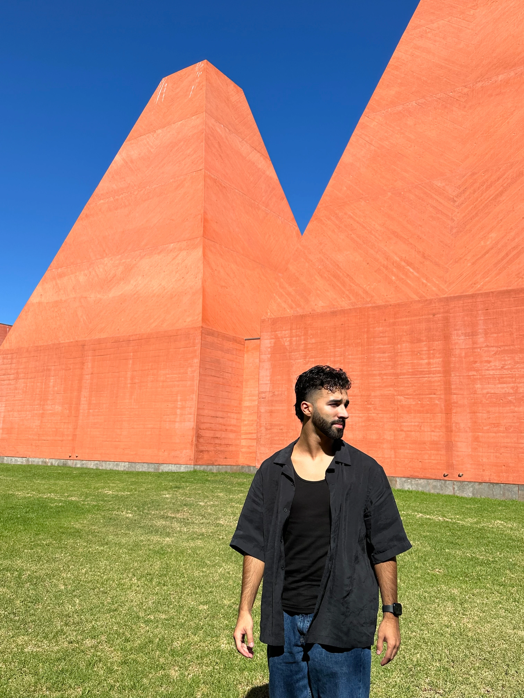

My name is Pedro Duarte, I'm from the municipality of Amadora and I'm 23 years old.
I went to secondary school in Lisbon, at Escola Secundária Rainha Dona Amélia in the area of Science and Technology. I then entered the Faculty of Architecture of the University of Lisbon where, to date, I have completed my degree in architecture and are now pursuing my master's degree.
At a professional level, I worked on several fronts. My first job was as an assistant manager where I supervised the opening and closing procedures of the store, I also answered phone calls and performed office duties. It was in a family company called Giracores where I only worked when necessary. I worked as a futsal coach at Sport Lisboa and Benfica, having been national and European champion. I was a storekeeper at Força Portugal, JD Sports and Joker. Companies in which I performed similar tasks such as customer service, organization and store window dressing. I highlight the work on Joker because it was my first adventure abroad having worked in Norway, a job that I would repeat again the following year. I also worked as a Summer Camp Supervior for a summer where I supervised and provided care for children, consistently monitoring and providing ongoing support and guidance.
I have always been a person who liked learning new things, so I attended several courses. The most important course I took was painting, where I took classes for over ten years, which allowed me to make painting a "part-time", the coaching course which contributed immensely to my leadership and teamwork skills. , where I managed to reach the biggest club in Portugal, which allowed me to win all the trophies I competed for. Finally, I took a course on 3D rendering, which was what I liked most about architecture (transferring the sheet design to realistic images on the computer) and I then decided to deepen my knowledge on the subject. In addition to these three, I also took an English course, a basic life support course, introduction to nutrition, pre-training/injury prevention and a Norwegian course.
The three things I most enjoy doing are traveling, sports and painting/decorative arts. I also speak three languages fluently, Portuguese, English and Spanish, but I also have some knowledge of French and Norwegian.
To conclude, I am now attending a Full Stack Web Devlopment course and my priority objective at the moment is to find a job in the area and I have also now founded my company "Signed By Pedro". With this company I aim to fill my free time in a productive way, as the arts are one of the things I most enjoy doing and I don't want to stop doing it.